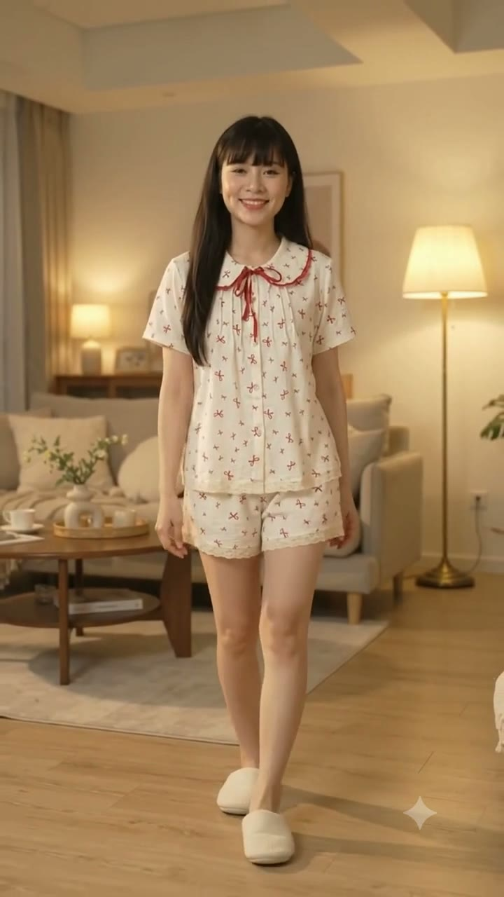
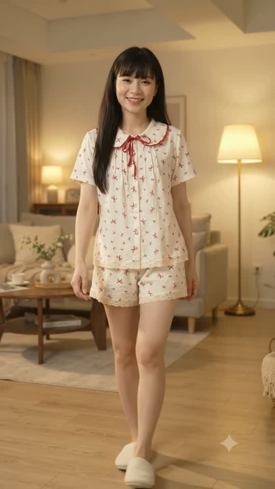

Pijama Jusoka nơ kem: mềm mát, xinh như đồ đi chơi, 1m55 mặc ở nhà vẫn cưng

Tối nay Lisa mặc pijama Jusoka nơ kem — 169.000đ sau voucher, 4,8 sao, đã bán 5k+. Áo tay ngắn cổ sen viền đỏ + nơ đỏ buộc cổ, họa tiết nơ nhỏ đỏ trên nền kem, viền ren gấu áo, quần đùi cùng họa tiết. Chất đũi Hàn mềm mát, mặc cả đêm vẫn mát, sáng dậy chụp hình cũng đẹp. Bạn sẽ mặc set này ở nhà xem phim, hay mặc đi ngủ?
Đọc trước khi mua: bài viết này là gợi ý phối đồ lấy cảm hứng từ các mẫu đang bán chạy trên Shopee. Lisa là nhân vật AI, nên bài viết không phải bài đánh giá sản phẩm Lisa đã mặc thật hay đã dùng thử. Giá, chất liệu và size cần kiểm tra lại trên trang bán trước khi mua. Link mua hàng:
· Pijama Jusoka DU01 biến thể Nơ Kem Đùi, shop JUSOKA — 169.000đ sau voucher, 4,8 sao (702 đánh giá), đã bán 5k+.
Một set pijama đủ 2 món, mặc ở nhà mà vẫn xinh như đồ đi chơi — áo tay ngắn và quần đùi cùng họa tiết nơ đỏ:
Đứng toàn thân — cổ sen viền đỏ, nơ đỏ buộc cổ

Đi lại trong phòng khách — họa tiết nơ đỏ nền kemNgồi sofa — quần đùi viền ren, dép lê kem
Vì sao set này hợp mặc ở nhà?
Cổ sen viền đỏ + nơ đỏ buộc cổ: cổ sen viền đỏ, nơ đỏ buộc ngay cổ — điểm nhấn nữ tính ngay khung đầu, nhìn là thấy cưng, khác hẳn pijama trơn thông thường.
Họa tiết nơ nhỏ đỏ nền kem: họa tiết nơ nhỏ đỏ rải đều trên nền kem — nhẹ nhàng, không rối mắt, mặc ở nhà xem phim hay chụp hình đều đẹp.
Chất đũi Hàn mềm mát: chất đũi Hàn mềm, mát, nhẹ — mặc cả đêm không bí, sáng dậy vẫn thoải mái, hợp cả mùa nóng lẫn phòng điều hòa.
Quần đùi viền ren, dép lê kem: quần đùi viền ren gấu, đi dép lê kem — gọn gàng, thoáng mát, đi lại trong nhà thoải mái, ngồi sofa cũng không bị gò bó.
Cách chọn pijama cho dáng nhỏ
Áo tay ngắn, đừng chọn tay dài rộng: dáng nhỏ mặc pijama tay ngắn vừa vặn, gọn vai — tay dài rộng dễ nuốt dáng, mặc ở nhà cũng nhìn lùng bùng.
Quần đùi, đừng chọn quần dài ống rộng: quần đùi khoe được chân, chân nhìn dài ra — quần dài ống rộng che mất chân, dáng nhỏ mặc càng lùn, nhất là khi ngồi sofa.
Họa tiết nhỏ, đừng chọn họa tiết to: họa tiết nơ nhỏ rải đều hợp với dáng nhỏ — họa tiết to bản dễ nuốt người, mặc pijama họa tiết to nhìn nặng nề hơn hẳn.
Mẹo mặc pijama đẹp
Buộc nơ cổ gọn, đừng thắt quá chặt: nơ đỏ buộc cổ thắt nhẹ, hơi xòe — vừa là điểm nhấn, vừa không bị khó chịu khi nằm ngủ.
Dép lê cùng tông kem: dép lê kem hoặc trắng đi cùng set là đủ — dép màu tối, dép nhựa sặc sỡ dễ phá mất vẻ nhẹ nhàng của cả set.
Tóc xõa thẳng hoặc buộc thấp: tóc dài xõa thẳng hoặc buộc thấp gọn gàng — hợp với cổ sen của áo, nhìn tiểu thư mà vẫn thoải mái ở nhà.